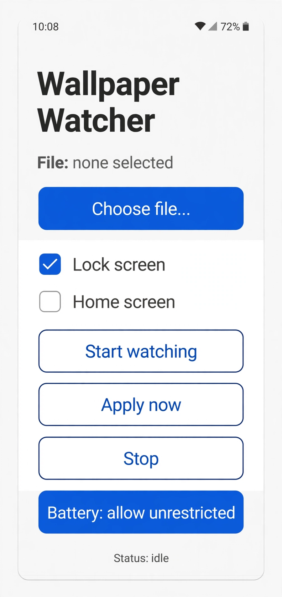
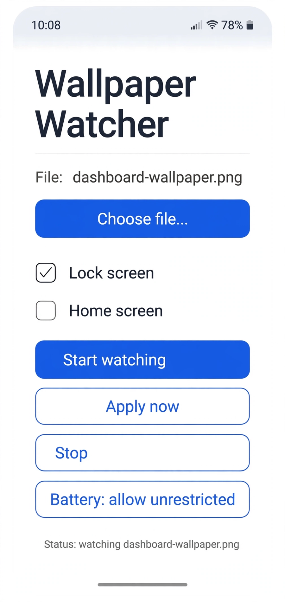

Wallpaper Watcher
Wallpaper Watcher does one job: it keeps your wallpaper set to the image you chose, and if that image lives somewhere that changes, the wallpaper changes with it. Point it at a picture and you are done. Point it at a source you update, and your home screen keeps up on its own.
Set it once. It keeps up.
Android · In closed testing on Google Play
- Your pick, your wallpaper. Choose a single image through the system file picker and the app sets it as your wallpaper.
- Or watch a source. Point the app at a folder on the phone, a file or folder in your Google Drive, or an image at a web address, and the wallpaper updates when the image changes.
- Fetches happen only at your direction. Optional sources are downloaded only when you set them up and choose them. There is no background uploading and nothing is sent to Scryware.
- Your screens, your call. Which screens get the wallpaper, and whether watching is on, are settings kept on your phone.
- No analytics, ads, or trackers. There are none in the app.


Privacy
Wallpaper Watcher works on your phone from the image you pick. If you connect an optional source, the app fetches from it only at your direction, and its settings never leave the device. The full wording is in the Wallpaper Watcher section of the privacy policy.
How to get it
Wallpaper Watcher is in closed testing on Google Play. Join the Scryware Testers group first, then opt in below and install it from the Play Store. Testing only counts while the app stays installed, so keep it on your phone.